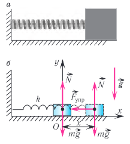
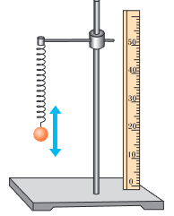
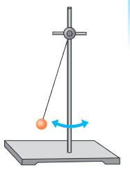
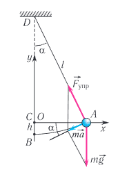

Видеоурок по теме
§ 2. Пружинный и математический маятники
Груз, подвешенный на нити, колеблющийся в поле тяжести Земли, а также груз, прикрепленный к пружине, — примеры наиболее простых механических колебательных систем. Рассмотрим физические процессы, происходящие в таких системах.
Совокупность нескольких тел образуют механическую систему. Тела, не входящие в систему, называются внешними.
Второй закон Ньютона (основной закон динамики): ускорение, приобретаемое телом под действием приложенных к нему сил, обратно пропорционально массе тела, направлено по результирующей этих сил и прямо пропорционально ее модулю:
Закон Гука: при упругих деформациях сжатия и растяжения модуль силы упругости прямо пропорционален модулю изменения длины тела:
где k — жесткость тела, l0 — длина недеформированного тела, l — длина деформированного тела. Направление силы упругости всегда противоположно направлению смещения при деформации.
Какие условия необходимы для возникновения колебаний?
Результаты опытов показывают, что для возникновения и существования механических колебаний тело изначально необходимо привести в движение. Это можно сделать, отклоняя его от положения равновесия или придавая ему начальную скорость посредством толчка. Этим отклонением или толчком определяется амплитуда колебаний. Кроме того, при выведении тела из положения равновесия в колеблющейся системе должна возникать результирующая сила, стремящаяся возвратить тело в положение равновесия.
Простейшая колебательная система, состоящая из тела с прикрепленной к нему пружиной, связывающей тело и опору, называется пружинным маятником. Пружина может располагаться как горизонтально (горизонтальный пружинный маятник), так и вертикально (вертикальный пружинный маятник).
Рассмотрим колебания горизонтального пружинного маятника.

Пусть тело массой m, лежащее на гладкой горизонтальной поверхности, прикреплено к свободному концу невесомой пружины жесткостью k (рис. 13, а). Второй конец пружины прикреплен к неподвижной опоре.
Выведем тело из положения равновесия, сместив его, например, вправо на расстояние x (см. рис. 13, б). При этом согласно закону Гука возникнет сила упругости Fупр, приложенная к телу и направленная влево.
Согласно второму закону Ньютона будет выполняться равенство:
С учетом закона Гука из (1) получаем уравнение для проекций величин на ось Ox (см. рис. 13, б):
Согласно (2) ускорение тела массой m пропорционально действующей силе и направлено к положению равновесия. При этом возникают колебания тела. Каждые полпериода направление движения меняется на противоположное. Смещение груза происходит то вправо, то влево относительно положения равновесия, т. е. оно меняет знак. Следовательно, и сила согласно (2) тоже меняет знак.
Перепишем полученное соотношение (2) в виде:
Уравнение (3) называется уравнением гармонических колебаний пружинного маятника.
Следовательно, необходимым условием возникновения гармонических колебаний является действие возвращающей силы, направленной к положению равновесия и прямо пропорциональной смещению тела от положения равновесия. Эта возвращающая сила всегда направлена к положению равновесия, о чем «говорит» минус в уравнении (2).
В положении равновесия возвращающая сила равна нулю (F = 0), так как x = 0. Поэтому если в этом положении колеблющееся тело остановить, то колебания исчезнут.
Расчеты показывают, а результаты экспериментов подтверждают, что при описанных условиях тело будет совершать колебания с периодом:
С учетом того, что период связан с циклической частотой соотношением T = 2π/ω, находим:
Из формул (4) и (5) следует, что период и частота гармонических колебаний пружинного маятника определяются массой груза m и жесткостью пружины k и не зависят от амплитуды его колебаний.

Отметим, что период и циклическая частота колебаний вертикального пружинного маятника (рис. 14) также определяются по формулам (4) и (5).
Одной из наиболее распространенных колебательных систем является математический маятник. Математическим маятником называется небольшое тело массой m, подвешенное на невесомой нерастяжимой нити длиной l, находящееся в поле силы тяжести (рис. 15).


Рассмотрим колебания математического маятника.
Отклонение маятника от положения равновесия будем характеризовать углом α (рис. 16), который нить образует с вертикалью. После отклонения маятника от положения равновесия на него действуют две силы: направленная вертикально вниз сила тяжести mg и направленная вдоль нити сила упругости Fупр. Под действием этих сил тело движется ускоренно к положению равновесия (точка B). Пройдя точку B, тело продолжает двигаться, но его скорость постепенно уменьшается, обращаясь в нуль в точке, симметричной точке А относительно вертикали. После этого оно начинает двигаться обратно к точке B.
Согласно второму закону Ньютона для движения маятника можем записать:
В проекциях на выбранные оси координат Ox и Oy (см. рис. 16) получаем:
Поскольку при малых углах отклонения длина дуги АВ ≈ х, то из ΔAOD находим:
где х — отклонение маятника от положения равновесия, l — длина маятника.
Подставляя выражение для синуса в (7), получим:
Таким образом, силой, возвращающей маятник к устойчивому положению равновесия при колебаниях, является сила упругости его нити и силы тяжести.
При малых углах отклонения маятника проекция вектора ускорения ay ≈ 0 и ей можно пренебречь, а cos α ≈ 1, тогда из уравнения (8) следует Fупр ≈ mg. Следовательно, уравнение движения маятника вдоль оси Ox запишется в виде:
где ax — проекция ускорения, сообщаемого грузу маятника силой упругости нити.
Откуда получаем уравнение колебаний математического маятника:
Сравнивая соотношения (10), (3) и (5), легко получить формулу для циклической частоты математического маятника в поле тяжести Земли:
Период малых колебаний математического маятника в поле тяжести Земли определяется по формуле Гюйгенса:
Используя соотношения (5) и (11), уравнение колебаний пружинного маятника ax + (k/m) x = 0 и математического маятника ax + (g/l) x = 0 можно записать в одинаковом виде:
Таким образом, зависимости координат от времени x(t), описываемые уравнениями (5) и (6) из § 1, удовлетворяют уравнению (13), которое называется уравнением гармонических колебаний.
Как видно из формул (11), (12), период и циклическая частота малых колебаний математического маятника не зависят от массы маятника и амплитуды его колебаний, а определяются только его длиной и ускорением свободного падения.
Нажмите на иконку или кнопку для прослушивания.